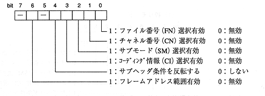

Title | Function | Function Name [S-] | No |
format Sint32 CDC_GetFiltMode (Sint32 filtno, Sint32 * fmode) Input filtno: Aperture number Output fmode: Aperture mode (lower 8 bits are valid) Function value Returns an error code. Function Gets the aperture mode for the aperture.
